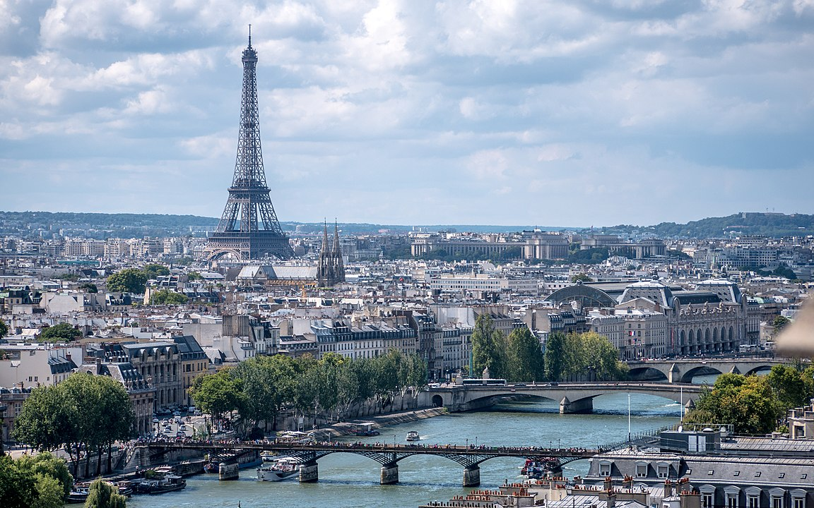
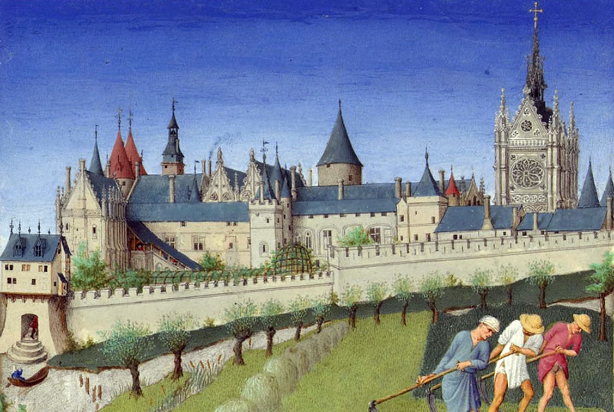
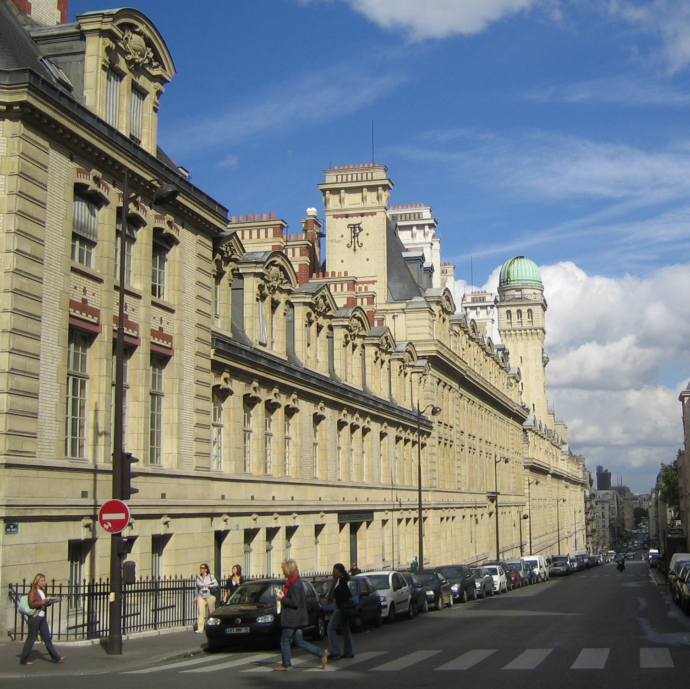

Paris (French pronunciation: [paʁi]
(About this soundlisten)) is the capital and most populous city of France, with an estimated
population of 2,175,601 residents as of 2018, in an area of more than
105 square kilometres ( square miles ).[4]
Since the 17th century, Paris has been one of Europe's major centres of
finance, diplomacy, commerce, fashion, gastronomy, science, and arts.
The City of Paris is the centre and seat of government of the region and
province of Île-de-France, or Paris Region, which has an estimated
population of 12,174,880, or about 18 percent of the population of
France as of 2017.[5] The Paris Region had a GDP of €709
billion ( $808 billion) in 2017.[6] According to
the Economist Intelligence Unit Worldwide Cost of Living Survey in 2018,
Paris was the second most expensive city in the world, after Singapore
and ahead of Zürich, Hong Kong, Oslo, and Geneva.[7] Another
source ranked Paris as most expensive, on par with Singapore and Hong
Kong, in 2018.[8][9]


Paris is a major railway, highway, and air-transport hub
served by two international airports: Paris–Charles de Gaulle (second-busiest airport in Europe
) and Paris–Orly.[10][11] Opened in 1900, the city's subway
system, the Paris Métro, serves 5.23 million passengers daily;[12]
it is the second-busiest metro system in Europe after the Moscow Metro.
Gare du Nord is the 24th-busiest railway station in the world, but the
busiest located outside Japan, with 262 million passengers in 2015.[13]
Paris is especially known for its museums and architectural landmarks:
the Louvre remained the most-visited museum in the world with 2,677,504
visitors in 2020, despite the long museum closings caused by the
COVID-19 virus.[14]
The Musée d'Orsay, Musée Marmottan Monet and Musée de l'Orangerie are
noted for their collections of French Impressionist art. The Pompidou
Centre Musée National d'Art Moderne has the largest collection of modern
and contemporary art in Europe. The Musée Rodin and Musée Picasso
exhibit the works of two noted Parisians. The historical district along
the Seine in the city centre is classified as a UNESCO World Heritage
Site; popular landmarks there include the Cathedral of Notre Dame de
Paris on the Île de la Cité, now closed for renovation after the 15
April 2019 fire. Other popular tourist sites include the Gothic royal
chapel of Sainte-Chapelle, also on the Île de la Cité; the Eiffel Tower,
constructed for the Paris Universal Exposition of 1889; the Grand Palais
and Petit Palais, built for the Paris Universal Exposition of 1900; the
Arc de Triomphe on the Champs-Élysées, and the hill of Montmartre with
its artistic history and its Basilica of Sacré-Coeur.
| Country |
Region |
Population |
Time Zone |
Area |
| France |
Île-de-France |
2,175,601 |
UTC+01:00 |
105.4 km2 |
|
|
|
UTC+02:00 (CEST) |
2,853.5 km2 (Urban) |
Etymology
The ancient oppidum that corresponds to the modern city
of Paris was first mentioned in the mid-1st century BC by Julius
Caesar as Luteciam Parisiorum ('Lutetia of the Parisii'), and is later
attested as Parision in the 5th century AD, then as Paris in 1265.
During the Roman period, it was commonly known as Lutetia or Lutecia
in Latin, and as Leukotekía in Greek, which is interpreted as either
stemming from the Celtic root *lukot- ('mouse'), or from *luto-
('marsh, swamp'), depending on whether the Latin or Greek form is the
closest to the original Gaulish name
The name Paris is derived from its early inhabitants, the Parisii
(Gaulish: Parisioi), a Gallic tribe from the Iron Age and the Roman
period. The meaning of the Gaulish ethnonym remains debated. According
to Xavier Delamarre, it may derive from the Celtic root pario-
('cauldron'). Alfred Holder interpreted the name as 'the makers' or
'the commanders', by comparing it to the Welsh peryff ('lord,
commander'), both possibly descending from a Proto-Celtic form
reconstructed as *kwar-is-io-. Alternatively, Pierre-Yves Lambert
proposed to translate Parisii as the 'spear people', by connecting the
first element to the Old Irish carr ('spear'), derived from an earlier
*kwar-sā. In any case, the city's name is not related to the Paris of
Greek mythology.
Paris is often referred to as the 'City of Light' (La Ville Lumière),
both because of its leading role during the Age of Enlightenment and
more literally because Paris was one of the first large European
cities to use gas street lighting on a grand scale on its boulevards
and monuments. Gas lights were installed on the Place du Carrousel,
Rue de Rivoli and Place Vendome in 1829. By 1857, the Grand boulevards
were lit. By the 1860s, the boulevards and streets of Paris were
illuminated by 56,000 gas lamps. Since the late 19th century, Paris
has also been known as Panam(e) (pronounced [panam]) in French slang.

History
The Parisii, a sub-tribe of the Celtic Senones,
inhabited the Paris area from around the middle of the 3rd century BC
One of the area's major north–south trade routes crossed the Seine on
the île de la Cité; this meeting place of land and water trade routes
gradually became an important trading centre. The Parisii traded with
many river towns (some as far away as the Iberian Peninsula) and
minted their own coins for that purpose.
Clovis the Frank, the first king of the Merovingian dynasty, made the
city his capital from 508. As the Frankish domination of Gaul began,
there was a gradual immigration by the Franks to Paris and the
Parisian Francien dialects were born. Fortification of the Île de la
Cité failed to avert sacking by Vikings in 845, but Paris' strategic
importance—with its bridges preventing ships from passing—was
established by successful defence in the Siege of Paris (885–886), for
which the then Count of Paris (comte de Paris), Odo of France, was
elected king of West Francia. From the Capetian dynasty that began
with the 987 election of Hugh Capet, Count of Paris and Duke of the
Franks (duc des Francs), as king of a unified Francia, Paris gradually
became the largest and most prosperous city in France.

By the end of the 12th century, Paris had become the political,
economic, religious, and cultural capital of France. The Palais de la
Cité, the royal residence, was located at the western end of the Île
de la Cité. In 1163, during the reign of Louis VII, Maurice de Sully,
bishop of Paris, undertook the construction of the Notre Dame
Cathedral at its eastern extremity.
Culture
For centuries, Paris has attracted artists from around
the world, who arrive in the city to educate themselves and to seek
inspiration from its vast pool of artistic resources and galleries. As
a result, Paris has acquired a reputation as the "City of Art".
Italian artists were a profound influence on the development of art in
Paris in the 16th and 17th centuries, particularly in sculpture and
reliefs. Painting and sculpture became the pride of the French
monarchy and the French royal family commissioned many Parisian
artists to adorn their palaces during the French Baroque and
Classicism era. Sculptors such as Girardon, Coysevox and Coustou
acquired reputations as the finest artists in the royal court in
17th-century France. Pierre Mignard became the first painter to King
Louis XIV during this period. In 1648, the Académie royale de peinture
et de sculpture (Royal Academy of Painting and Sculpture) was
established to accommodate for the dramatic interest in art in the
capital. This served as France's top art school until 1793.

The inventor Nicéphore Niépce produced the first permanent photograph
on a polished pewter plate in Paris in 1825. In 1839, after the death
of Niépce, Louis Daguerre patented the Daguerrotype, which became the
most common form of photography until the 1860s. The work of
Étienne-Jules Marey in the 1880s contributed considerably to the
development of modern photography. Photography came to occupy a
central role in Parisian Surrealist activity, in the works of Man Ray
and Maurice Tabard. Numerous photographers achieved renown for their
photography of Paris, including Eugène Atget, noted for his depictions
of street scenes, Robert Doisneau, noted for his playful pictures of
people and market scenes (among which Le baiser de l'hôtel de ville
has become iconic of the romantic vision of Paris), Marcel Bovis,
noted for his night scenes, as well as others such as Jacques-Henri
Lartigue and Henri Cartier-Bresson. Poster art also became an
important art form in Paris in the late nineteenth century, through
the work of Henri de Toulouse-Lautrec, Jules Chéret, Eugène Grasset,
Adolphe Willette, Pierre Bonnard, Georges de Feure, Henri-Gabriel
Ibels, Paul Gavarni and Alphonse Mucha.
he largest opera houses of Paris are the 19th-century Opéra Garnier
(historical Paris Opéra) and modern Opéra Bastille; the former tends
toward the more classic ballets and operas, and the latter provides a
mixed repertoire of classic and modern. In middle of the 19th century,
there were three other active and competing opera houses: the
Opéra-Comique (which still exists), Théâtre-Italien and Théâtre
Lyrique (which in modern times changed its profile and name to Théâtre
de la Ville). Philharmonie de Paris, the modern symphonic concert hall
of Paris, opened in January 2015. Another musical landmark is the
Théâtre des Champs-Élysées, where the first performances of
Diaghilev's Ballets Russes took place in 1913.
Education
Paris is the département with the highest proportion of
highly educated people. In 2009, around 40 percent of Parisians held a
licence-level diploma or higher, the highest proportion in France,
while 13 percent have no diploma, the third-lowest percentage in
France. Education in Paris and the Île-de-France region employs
approximately 310,000 people, 170,000 of whom are teachers and
professors teaching approximately 2.9 million children and students in
around 9,000 primary, secondary, and higher education schools and
institutions

The Paris region hosts France's highest concentration of the grandes
écoles – 55 specialised centres of higher-education outside or inside
the public university structure. The prestigious public universities
are usually considered grands établissements. Most of the grandes
écoles were relocated to the suburbs of Paris in the 1960s and 1970s,
in new campuses much larger than the old campuses within the crowded
City of Paris, though the École Normale Supérieure, PSL University has
remained on rue d'Ulm in the 5th arrondissement.There are a high
number of engineering schools, led by the PSL University (which
comprises several colleges such as École des Mines, École nationale
supérieure de chimie, École Pratique des Hautes Études and
Paris-Dauphine), the Paris-Saclay University (which comprises several
colleges such as AgroParisTech, CentraleSupélec and ENS Paris-Saclay)
the Polytechnic Institute of Paris (which comprises several colleges
such as École Polytechnique, Télécom Paris and École nationale de la
statistique et de l'administration économique) and also independent
colleges such as École des Ponts et Chaussées or Arts et Métiers.
There are also many business schools, including HEC, INSEAD, ESSEC,
and ESCP Europe. The administrative school such as ENA has been
relocated to Strasbourg, the political science school Sciences-Po is
still located in Paris' 7th arrondissement, the most prestigious
university for social sciences, the École des hautes études en
sciences sociales is located in Paris' 6th arrondissement and the most
prestigious university of economics and finance, Paris-Dauphine, is
located in Paris' 16th. The Parisian school of journalism CELSA
department of Sorbonne University is located in Neuilly-sur-Seine.
Paris is also home to several of France's most famous high-schools
such as Lycée Louis-le-Grand, Lycée Henri-IV, Lycée Janson de Sailly
and Lycée Condorcet. The National Institute of Sport and Physical
Education, located in the 12th arrondissement, is both a physical
education institute and high-level training centre for elite athletes.